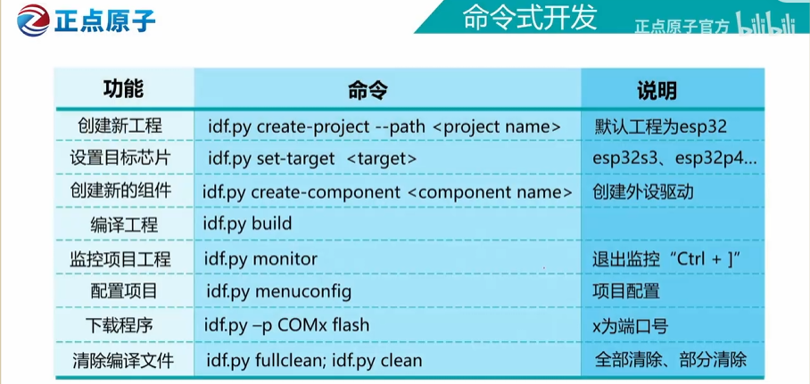
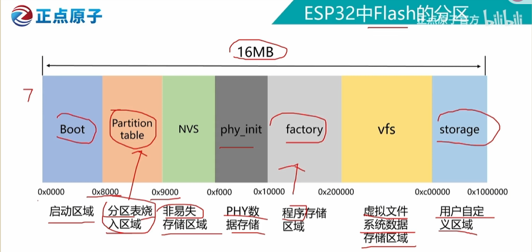

版权信息
warning
本文章为博主原创文章。遵循 CC 4.0 BY-SA 版权协议，转载请附上原文出处链接和本声明。
1. 安装ESPIDF
参见——安装 ESP-IDF 和相关工具 - - — ESP-IDF Extension for VSCode latest 文档
2. CLI常用命令

3. SDK的配置
最常用的就是配置flash、CPU主频、FreeRTOS的时钟频率。
可能还会用到：
自定义分区、外部ram配置、日志等级、编译优化。
参见——ESPIDF-SDK配置
4. 分区表详解

分区顾名思义就是给硬盘分区，并告诉系统每个区是用来干嘛的。如果没有分区表，系统就不知道如何操作这个存储器。
这是我自己自定义的分区表：这是一个适用ota升级的分区
# Name, Type, SubType, Offset, Size, Flags
# 注意：偏移量(Offset)留空，系统在编译时会自动计算并紧凑排列
nvs, data, nvs, , 0x4000,
otadata, data, ota, , 0x2000,
phy_init, data, phy, , 0x1000,
factory, app, factory, , 1M,
ota_0, app, ota_0, , 1M,
ota_1, app, ota_1, , 1M,
spiffs, data, spiffs, , 0xE0000,4.1 容量怎么算？
相信大家第一次看到用16进制表示分区的大小时是一头雾水，不知道这对应的是多少字节。其实我们只需要把16进制转换为十进制就可以算出大小。
比如 0x1000 用我们小学二年级学过的方法：。
因为 1 KB = 1024 字节，所以：
再如 0xf0000
F 在十六进制里代表 15。换算成十进制： 字节。
换算成 KB：
总结一下，0x1000 代表 4 KB。0x10000 代表 64 KB。这样我们就可以很直观的换算大小了。
所以，上面分区表大小对应如下：
- nvs: 16 KB
- otadata: 8 KB
- phy_init: 4 KB
- factory: 1 MB (1024 KB)
- ota_0: 1 MB (1024 KB)
- ota_1: 1 MB (1024 KB)
- spiffs: 896 KB
4.2 分区表各列含义
esp32的分区表是用csv文件定义的，左到右用逗号隔开了 6 个参数：
Name, Type, SubType, Offset, Size, Flags
-
Name (名称)：这个分区的名字，你自己起的，方便你和系统识别（比如叫
spiffs或nvs）。 -
Type (类型)：大分类。ESP32 只有两种核心类型：
-
app：代表这个分区是用来存可执行的代码/程序的。 -
data：代表这个分区是用来存数据的（比如配置参数、文件、网页等）。
-
-
SubType (子类型)：小分类，进一步说明这个分区具体干嘛用。比如同样是
app，可以是出厂代码（factory）或者升级用的代码（ota_0）。不可随意起！ -
Offset (偏移量)：这个分区在芯片物理空间上的“起始地址”。推荐留空。 编译器会把它们紧凑地排列好，省去了我们手动计算地址可能犯的错。
-
Size (大小)：这个分区的容量（就是我们上面算过的那些数值）。
-
Flags (标志位)：高级设置，比如是否加密等。绝大多数情况下留空即可。
4.3 分区解析
这是一个带 OTA 无线升级功能 + 文件系统的设计。
1. 系统配置区（nvs, otadata, phy_init）。nvs 用来存连接过的 WiFi 密码、传感器校准值，这样断电重启后密码还在。phy_init 存射频底层数据。otadata 告诉系统下次开机应该运行哪个盘里的代码。
2. 核心程序区（factory, ota_0, ota_1） 为什么要有三个 app 区？这是为了实现 OTA（Over-The-Air 无线升级）：
-
factory：通过 USB 线烧录的原始固件（出厂设置）。
-
ota_0 和 ota_1：当你通过 WiFi 远程更新程序时，ESP32 不会直接覆盖正在运行的程序（万一升级到一半断电了，设备就“变砖”彻底死机了）。假设系统现在运行在
ota_0，当你下载新固件时，它会存入ota_1。存好并校验无误后，修改otadata，下次重启就从ota_1启动。这就保证了设备永远有一个完整的系统可以运行。
3. 文件系统区（spiffs） 这部分空间相当于一个小小的 U 盘。如果你用 ESP32 做一个网页控制台，你可以把 HTML 文件、CSS 样式表甚至小的图标图片存在这里，你的代码只需要去读取这些文件发给浏览器即可，而不需要把这些乱七八糟的文本全都硬编码（Hardcode）写在 C 语言代码里。
4.4 subtype的官方命名规范
| 分区类型(Type) | 子类型(SubType) | 核心用途说明 |
|---|---|---|
| app (程序区) | factory | 出厂默认程序，ESP32 首次通电优先运行 |
| ota_0 ~ ota_15 | OTA 无线升级程序槽位，最多16个，常用 ota_0/ota_1 交替使用 | |
| test | 工厂生产线测试专用，日常开发极少使用 | |
| data (数据区) | 【系统核心数据】 | ⚠️ 禁止随意修改 |
| nvs | 非易失性存储，WiFi 库自动存储密码、连接记录 | |
| ota | 8KB 小分区，记录当前系统运行的 OTA 槽位 | |
| phy | 物理层初始化数据，存储射频校准等底层参数 | |
| 【文件系统】 | 用于存储数据/文件 | |
| spiffs | Flash 轻量级文件系统，适合存储网页、图片 | |
| fat | 通用 FAT 文件系统，适配 SD 卡、USB 存储模拟 | |
| littlefs | 高性能、高安全性，主流替代 spiffs 的文件系统 | |
| 【其他高级功能】 | 拓展功能专用分区 | |
| coredump | 程序崩溃时存储内存状态，用于故障排查 | |
| nvs_keys | Flash 加密功能专用，存储 NVS 分区加密密钥 |
4.5 数据分配规则
-
规则一：4KB 对齐原则（最基础的物理铁律）
Flash 芯片的最小擦除单位是 1 个扇区（4KB）。
-
规则：所有分区的大小（Size）必须是 4KB（
0x1000）的整数倍。 -
绝对不要出现像
0x1500或者3KB这种大小，系统会直接报错。
-
-
规则二：系统关键数据“雷打不动”
有些底层数据分区，官方有严格的要求，最好不要乱改：
-
otadata：必须是 8KB（0x2000）。用于 OTA 双备份切换。 -
phy_init：必须是 4KB（0x1000）。用于射频参数。
-
-
规则三：NVS 分区“宁大勿小”
nvs负责存储 WiFi 密码、系统配置等。-
底线：官方底层库（特别是 WiFi 和蓝牙库）在初始化时需要占用一定的 NVS 空间。最小不要低于 12KB，通常标准推荐值为 16KB（
0x4000）。 -
扩展：如果你要在代码里用
Preferences库保存大量的个人设置、长字符串，可以酌情增加到20KB(0x5000) 或更大。
-
-
规则四：APP 程序区“看菜下饭，强迫对称”
存放代码的区域（
factory,ota_0,ota_1）是最占空间的部分。-
看菜下饭：大小取决于你写的代码编译出来有多大。通常引入了 WiFi、蓝牙、显示屏驱动后，固件轻松突破 800KB。所以一般给 1MB（
0x100000）起步。如果是非常庞大的项目，可能需要分 1.5MB 甚至 2MB。 -
强迫对称：如果你使用了 OTA 升级，
ota_0和ota_1的大小必须完全一致！ 而且它们的大小，决定了你未来能够升级的最大固件体积。
-
-
规则五：文件系统（SPIFFS/FAT）“兜底捡漏”
像
spiffs或littlefs这样的文件系统，对大小没有特定要求（只要满足规则一的 4KB 对齐即可）。- 规则：通常把它放在分区表的最后一行，大小就是 “整块芯片总容量 - 其它所有分区占用的容量”。
假设你手里有一块全新的 Flash 芯片，你可以按照以下 4 步走来分配：
-
先扣除系统预留开销：芯片最开头有约 36KB 的空间是被引导程序（Bootloader）和分区表本身占用的。这部分你看不见，但算总账时要扣掉（0x0000-0x9000）。
-
分配固定小分区：写上
nvs(16KB)、otadata(8KB)、phy_init(4KB)。这三个一共占 28KB。 -
分配程序大头（App）：评估你的代码有多大。假设是 4MB 芯片带 OTA，你分给
ota_01.2MB，ota_11.2MB。（总共用掉 2.4MB）。 -
把剩下的都给文件系统（Data）：
-
芯片总容量 - Bootloader预留 - 小分区 - App分区 = 剩下的给
spiffs。 -
(注意：偏移量 Offset 全部留空，让系统自动从上到下紧凑排列计算即可。)
-
需要注意的是，ESP32规定所有
Type为app（可执行代码）的分区，它的起始地址（Offset）必须是 64KB（十六进制0x10000）的整数倍（64字节对齐）。因此上面计算spiffs大小的公式算出来的结果会偏大。需要根据实际情况调小一点。
补充：如果你想把bootloader的存储空间改大一点，只需要更改分区表的起始地址，默认为0x8000。比如改为0x10000，由于分区表默认占4字节，因此分区表的末地址为0x11000，那么更改后芯片开头就被预留了68KB空间。此时重新计算并分配spiffs的空间。
5. 自定义组件和cmake修改
ESP-IDF 的核心设计思想就是组件化 (Component-based)。系统自带的 FreeRTOS、Wi-Fi、蓝牙，全都是一个个独立的组件。 我们自己写的业务逻辑代码（比如 LED 驱动、传感器读取、MQTT 通信等），最好也抽离成独立的组件。这种方式代码解耦度极高，以后甚至可以直接复制到别的项目里用。
假设你要写一个专门控制 LED 的模块，你的目录结构应该变成这样：
hello_world/
├── CMakeLists.txt (项目级)
├── components/ <-- 1. 在项目根目录下手动建一个 components 文件夹 (名字必须是这个)
│ └── led_ctrl/ <-- 2. 你的新模块文件夹
│ ├── CMakeLists.txt <-- 3. 为这个模块新建一个专属的 CMake 文件
│ ├── led_ctrl.c
│ └── include/ <-- 4. 习惯上把头文件单独放一个 include 文件夹
│ └── led_ctrl.h
├── main/
│ ├── CMakeLists.txt
│ └── main.c第 1 步：编写模块专属的 CMake 在 led_ctrl 文件夹里，新建一个 CMakeLists.txt，里面只需要写这一句：
idf_component_register(SRCS "led_ctrl.c"
INCLUDE_DIRS "include"
REQUIRES driver) # 如果你的LED代码用到了GPIO，就需要依赖底层的 driver 组件注：REQUIRES 是声明依赖，如果不写，这部分代码就找不到 ESP32 底层的系统函数。
第 2 步：在 main 中引入 因为你把 led_ctrl 放进了 components 文件夹，ESP-IDF 的 CMake 不同寻常，它在编译时会自动扫描根目录下的 components 文件夹，并把它注册进系统。 所以你不需要去修改最外层项目的 CMake，只需要在 main.c 里直接使用即可：
// 在 main.c 中直接包含即可，CMake 会自动找到它
#include "led_ctrl.h"
void app_main(void)
{
// 调用 led_ctrl.c 里的函数
}6. API
——请参阅官方文档